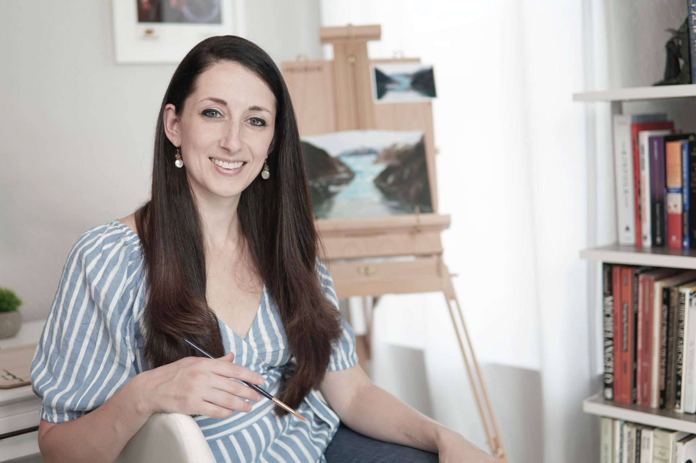

About
As a Senior Graphic Designer with 16 years of experience, I have had the opportunity to craft strategic brand campaigns, packaging, and marketing assets that drive business growth primarily in the e-commerce and retail industries.
I specialize in brand identity design, brand strategy, packaging, surface pattern design, and creative direction, collaborating with teams to develop compelling visuals.
[[Placeholder: A line on Lauren’s current role at Colliers — confirm wording with Lauren.]]
Brand Identity · Packaging · Brand Strategy · Digital Design · Illustration · Marketing
From Clients
(05)“Lauren creates beauty and professionalism with simple touches that go a long way. I’ve never accepted a completed design from Lauren that I did not like because she would never allow it! I highly recommend to have Lauren work on packaging or branding for you as they always do a great job.”
“We generated more early sales than we expected. She really took the time to understand the essence of our business. Lauren helped us establish a brand identity that instantly communicated the values and quality of our product.”
“Lauren not only understood the design aesthetic I was after, but more importantly, the emotion and feeling I wanted our designs to evoke. She is excellent at her craft, efficient, flexible, and a wonderful communicator. Lauren gave me the gift of feeling aligned with my branding for the first time in years.”
“I have worked with dozens of designers and design agencies during my career in consumer goods marketing, and Lauren stands at the top of my list for a reliable, responsive, high quality, thoughtful, efficient, and strategic designer. The quality of her work is absolutely impeccable. She goes above and beyond with thoroughness in the project deliverables and files.”
“We had a great experience working with Lauren. Not only is she very attuned to what the client wants, but she’s also very detailed and patient. She chose all the photos for our manual and took the time to make sure that all the visuals matched the mission of our work. We were on a deadline and she delivered before! I won’t hesitate to call her again next time we need a design specialist.”

Educator
In the process of creating and growing my own design business, I witnessed how many new designers struggled—not just with the business side, but also with the fundamentals of graphic design and branding. This inspired me to create 4 The Creatives, a platform dedicated to teaching essential design skills, brand identity, and the tools needed to grow a successful career. Through courses, workshops, and mentorship, I have had the opportunity to help thousands of creatives build confidence in both their work and their future.
From Students
(03 of 08)“Because of her program, now my business is flourishing. I have a full-fledged agency. The opportunities we have gotten are out of this world, we have a steady stream of clients, but nothing of what I’m doing or what I’ve learned could have come to life if it weren’t for Lauren.”
“Starting a business can be intimidating, but with Lauren’s guidance, we gained the confidence and support we needed to succeed. Thanks to Lauren’s mentorship, we’ve been able to land new clients, refine our niche, and create a strong social media presence that attracts leads.”
“I started her How To Graphic Design Course a few months back and I’ve learned so much. I’m much more confident about my work and my skillset. Lauren really over-delivers. I can’t recommend her highly enough.”